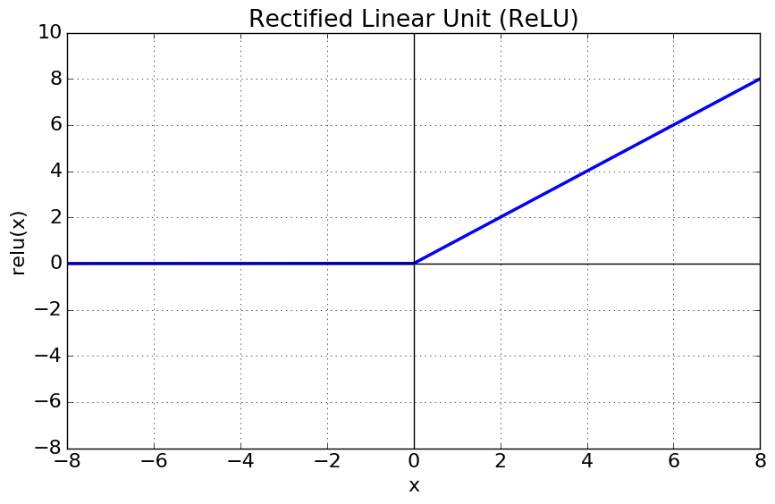
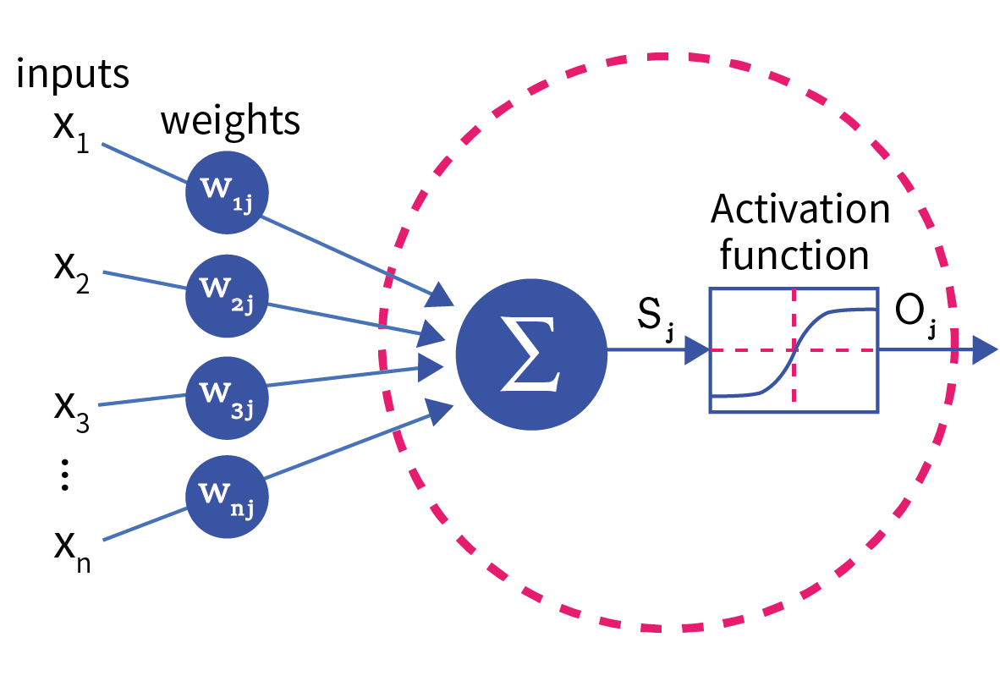
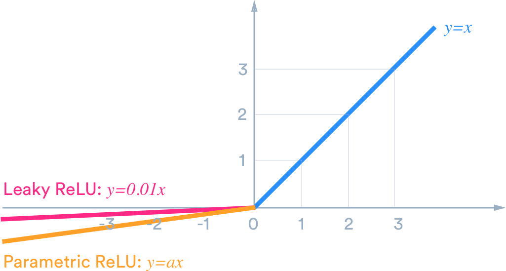
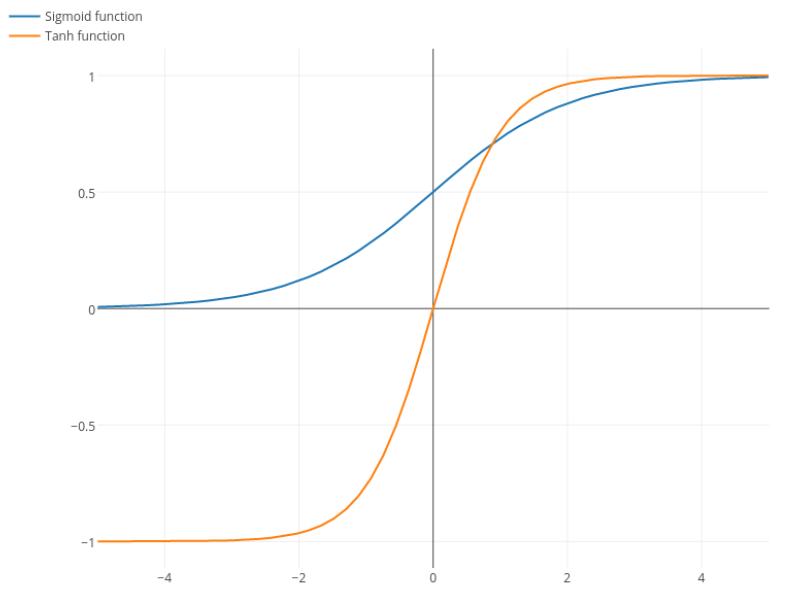
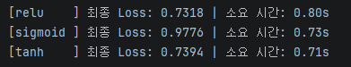

평소 원리는 잘 모르지만 항상 신경망을 구성할 때 사용한 활성화 함수인
ReLU
에 대해 알아보자.
ReLU 딥 러닝에서 가장 널리 사용되는 활성화 함수로, 비선형성을 부여하는 역할을 한다.
ReLU 이름은 Rectified Linear Unit의 약자로 의미를 보면
Rectified는 반파 정류로 전기 회로에서 음의 전압을 0으로 모두 깎고 양의 전압만 통과시킨다.
Linear는 입력값이 0보다 클 때 $f(x) = x$라는 식을 따르는 선형 특징을 의미한다.
Unit은 뉴런 혹은 노드를 의미한다.

즉 ReLU 위의 함수와 같이 음수 입력에서는 0을
양수 입력에서는 선형적 특성을 띄게 만들어주는 함수이다.

딥러닝 모델에서 활성화 함수를 사용하는 이유는 비선형성을 추가하기 위해서이다.
만약 i개의 층에 대하여 위와 같은 수식을 가질 때, 이들을 아무리 합쳐도
위와 같은 하나의 거대한 선형층과 다를 바 없다.
하지만 해결 할 문제들은 데이터가 매우 복잡하고 비선형적이기에 데이터를 학습하기 부족함.
앞서 말했듯이 ReLU 수식은 입력이 0보다 작을때 항상 0이며 0보다 클 때 입력값과 같다.
해당 수식은 가중치 W에 대한 L의 기울기 이다.
z는 데이터를 어떻게 해석할지, a는 결과를 어떻게 전송할지 라고 하면,
$z = Wx + b$ $a = f(z)$로 a가 ReLU 역할을 하며 z가 가중치와 편향이 계산된 직선의 값이다.
여기서 활성화 함수의 미분값($\frac{\partial a}{\partial z}$)이 양수에서 항상 1이므로 기울기 소실 없이 진행되는 것을 확인 할 수 있다.
ReLU 장점
연산 효율이 뛰어나다.
$f(x) = \max(0, x)$라는 매우 간단한 수식은 다른 함수처럼 지수 함수 연산을 하지 않아 효율이 좋다.
두번째로는 기울기 소실이 완화되었다.
Sigmoid와 Tanh 케이스의 경우엔 입력값이 커지거나 작아지면 기울기가 0에 수렴하나 ReLU 항상 1로 고정이다.
마지막으로 음수 입력값일때 출력이 0이다.
이는 모델을 더 가볍고 중요한 특징에 집중하게 한다.
ReLU 단점
Dying ReLU
가장 대표적인 단점으로 특정 뉴런의 값이 음수에 계속 머물게 되면
해당 뉴런은 출력과 기울기가 모두 0이되어 학습에 악영향을 미친다.
출력 값의 중심이 0이 아니다.
ReLU 출력 값은 항상 0 또는 양수이므로 가중치 업데이트시 기울기 편향이 일어나 수렴이 늦어진다.
출력 값의 상한선이 없다.
양수 범위에서 출력 값의 상한이 없어 학습률의 수치에 따라 활성화 값이 기하급수적으로 커질 수 있다.

ReLU함수 ($f(x) = \max(0, x)$)는 입력 값이 0 이하 일 때 출력과 기울기 모두 0이다.
이 때 학습 가중치가 잘못 업데이트 되어 음수 값인 경우에, 해당 뉴런의 기울기는 항상 0이 되어버린다.
결과 적으로 학습과정에서 해당 뉴런과 연결된 모든 뉴런의 가중치의 업데이트가 멈추어 학습이 되지 않는다.
앞에서 우리는 이를 Dying ReLU라 표기하였다.
이 문제를 해결하기 위해 Leaky ReLU가 등장했다.
Leaky ReLU는 음수 영역에서 0이 아닌 아주 작은 기울기를 부여해주는 차이점이 있다.
이로 인해 입력 값이 음수라 할지라도 기울기가 작게나마 살아있게 하며,
이는 곧 작은 업데이트가 지속되어 다시 양수 영역으로 돌아올 기회를 얻게 된다.
하지만 이 역시 $\alpha$를 사용자가 직접 지정해야 하며, 최적의 수를 찾기 어렵고
프로젝트에 따라 ReLU보다 성능이 나오지 않아 일관성이 부족하다.
수식은 $\max(\alpha x, x)$로 Leaky ReLU 수식과 동일하다.
하지만 $f(x) = \max(0, x) + a \min(0, x)$로 주로 표기한다.
$\alpha$의 값이 Leaky ReLU와 다르게 '학습 가능한 값'이기에 미분의 편의성을 가지기 위함이다.
이는 데이터의 특성에 따라 음수 신호를 얼마나 살릴지 모델이 직접 결정하여 Leaky ReLU보다 유연하고 성능이 좋다.
하지만 학습해야 할 파라미터가 늘어나는 것이기에 데이터가 적은 경우 과적합이 올 수 있다.
ReLU계열의 선형을 부드러운 지수 함수 곡선으로 바꾼 모델이다.
음수에서 부드럽게 0으로 수렴하는 곡선을 그려 출력값을 0에 가깝게 유도하여 정규화 효과를 준다.
그리고 음수값이 매우 커지더라도 $-\alpha$로 수렴하여 부적절한 데이터에 대해 ReLU보다 더 견고하게 반응한다.
하지만 $alpha(e^x -1)$과 같은 지수함수가 있어 연산량이 많고, 속도가 느리다.
ReLU 이전에는 Sigmoid와 Tanh를 주로 사용하였으나 ReLU 주목받게 된 것은 이유가 있다.

Sigmoid와 Tanh의 그래프를 보시면 양 끝단으로 갈수록 곡선이 평평해지는 것을 볼 수 있다.
입력값이 커지거나 작아질 수록 기울기 값이 0으로 수렴 한다는 것 이다.
Sigmoid의 미분값의 최대치는 0.25, Tanh의 최대치는 1로 기울기 소실이 발생하며
가중치 조절의 수정이 기울기에 비례하니 수천번의 학습 결과가 원점과 비슷하게된다.
또, 딥 러닝 학습 과정에서 역전파를 실행 할 때,
맨 뒤 출력층 부터 입력층 까지 정보를 전달하는데에 있어 Sigmoid는 좋지 않다.
신경망이 $L_1, L_2, L_3 ... L_n$ 이 있고 Sigmoid의 최대 기울기를 가정 했을 때,
$L_n$는 100%의 정보를 갖고 있다 하면 $L_n-1$ $L_n-2$..로 역전파를 진행 할 수록
$0.25^n$이 각각의 신경망에 곱해져 입력층에 가까울수록 정보의 손실이 커진다.
Sigmoid와 Tanh와 달리 ReLU ($\max(0, x)$)라는 지수 함수가 없는 간단한 수식을 갖는다.
이는 수 만번 작업을 반복해야 하는 GPU입장에선 꽤 무거운 작업으로 느껴진다.
또, ReLU 비선형적이지만 부분적으로는 $y=x$인 선형 함수를 갖는다.
이 부분적 선형성이 최적화 도구들이 가중치를 찾기 수월하게 만들어 준다.
class relu(layers.Layer):
def __init__(self, **kwargs):
super(relu, self).__init__(**kwargs)
def call(self, inputs):
# f(x) = max(0, x) 직접 구현
return tf.math.maximum(0.0, inputs)
model.add()에 넣을 수 있도록 TensorFlow의 기본 레이어 클래스를 상속 받고,
생성자를 통해서 텐서플로우 레이어가 가져야 할 설정을 세팅 해 준다.
그 후 call 함수에서 ReLU 핵심 로직인 $f(x) = \max(0, x)$를 구현한다.
input = np.random.standard_normal((2000, 32)).astype('float32')
output = np.random.standard_normal((2000, 1)).astype('float32')
model = models.Sequential()
model.add(layers.Dense(64, input_shape=(32,)))
model.add(layers.Activation.tanh, layers.Activation.sigmoid, relu()) * 여기선 셋 중 하나만 삽입해서 사용한다.
model.add(layers.Dense(1))
여기선 input에 32차원의 특징을 가정하고 output에서 단일 결과값을 유추하도록 가정한다.
models.Sequential()를 가정하고 가중치를 만들어 주기 위해 Dense층을 하나 삽입한다.
* 활성화 함수는 들어온 값을 조절하는 것이지, 가중치를 만들진 않는다.
input부터 Shape를 쫓아가보면,
input = np.random.standard_normal((2000, 32)).astype('float32')
- Shape(2000,32)
model.add(layers.Dense(64, input_shape=(32,)))
- Shape(2000,64) * 여기서 가중치 W의 Shape는 (32,64) 이다.
model.add(활성화 함수)
- Shape(2000,64) * 비선형성을 주입하지 W생산 or Shape변형은 하지 않는다.
model.add(layers.Dense(1))
- Shape(2000,1) * 결과 값을 압축 즉 우리가 원한 output의 형태가 나온다.

ReLU Loss값이 제일 적은 것을 확인 할 수 있다.
이는 앞서 말한 기울기 소실 때문이다.
ReLU 사용하고 Sigmoid, Tanh는 버려지는 것은 아니다.
학습에 유리한 ReLU Sigmoid, Tanh역시 전문 분야가 존재한다.
Sigmoid같은 경우엔 이전에서 살펴 보았듯이, 어떤 값이 들어오던 [0,1]사이로 압축한다.
이는 확률 값을 나타내는데에 최적화 되어있다.
사진이 하나 있을 때 이 사진에 있는 것이 고양이인지 아닌지 확률이 0.8이라면,
이 사진은 고양이야! (1) 이 사진은 고양이가 아니야! (0)와 같은 이진분류의 출력층에서 필수이다.
Tanh는 출력값의 중심이 0이다.
만약 이미지를 생성 할 때 픽셀 값을 [0,255]에서 [-1,1]로 정규화를 한다 하자
ReLU는 음수를 다 버리고, Sigmoid는 $[0, 1]$만 표현하기에 Tanh가 더 풍부한 색을 낼 수 있다.